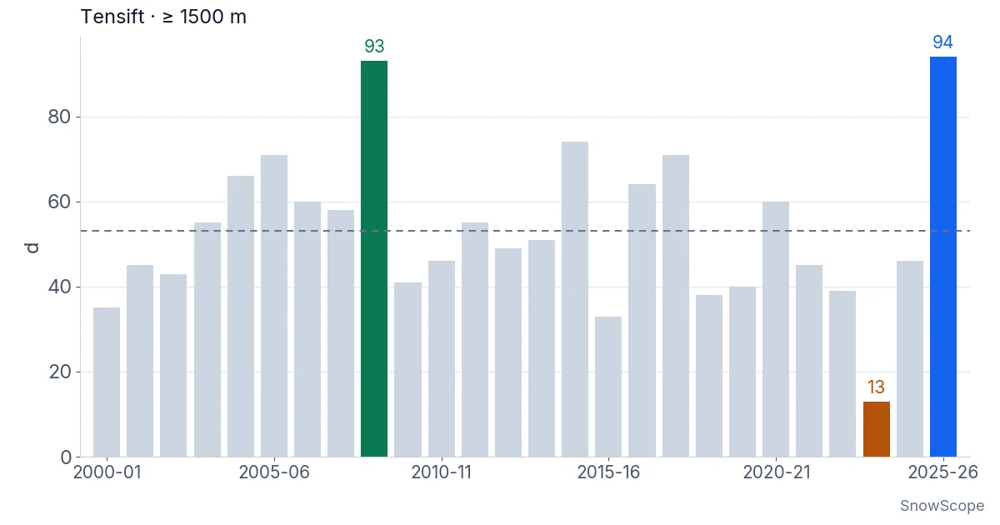
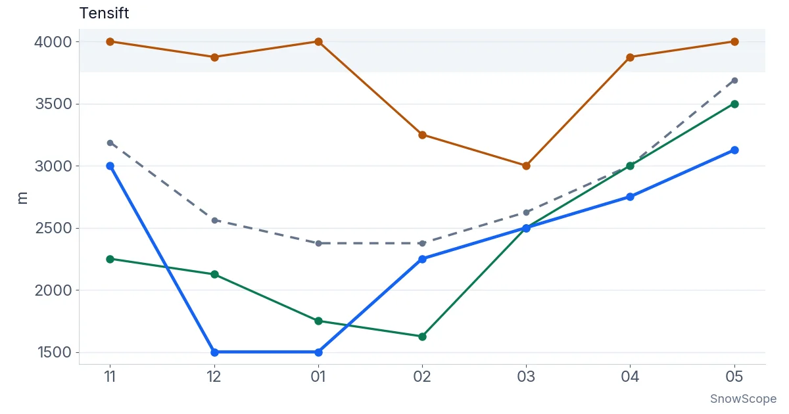

Quanto è stato bianco l'Alto Atlante nell'inverno 2025-26? 26 inverni di copertura nevosa dal satellite
Chiedete a chiunque nelle valli a sud di Marrakech e ve lo dirà: è stato un inverno bianco. Il satellite è d'accordo. Tra il 1° novembre e il 30 aprile le montagne del Tensift sopra i 1.500 m sono state bianche per 94 giorni, più di qualsiasi inverno dal 2000-01 e quasi il doppio dei 53 abituali. Una premessa: questo articolo parla di dove il suolo era bianco, non di quanto era alta la neve.
Le previsioni neve in tempo reale per Oukaïmeden nell'app SnowScopeAltezza neve, allerte powder e mappa 3D, gratis.
Cosa significa un pixel bianco
Le immagini vengono da una fotocamera satellitare della NASA che fotografa l'Atlante quasi ogni giorno dal 2000. Per ogni quadrato di 500 m la NASA conserva una sintesi di 8 giorni: questo quadrato è stato visto bianco almeno una volta? Abbiamo preso i quadrati sopra i 1.500 m nelle valli di montagna che scendono verso il Tensift, dall'Ourika e dal Rheraya fino al N'Fis, in tutto 3.620 km². Abbiamo scartato ogni sintesi di 8 giorni in cui le nuvole coprivano più di un quinto di quest'area.
Un quadrato bianco può avere 5 cm di neve fresca o 2 m di vecchi accumuli. La fotocamera non vede la differenza. Tutto ciò che segue riguarda quindi l'estensione: quanta montagna era bianca e per quanto tempo. Non dice nulla dell'altezza della neve, né della quantità d'acqua che contiene.
Novantaquattro giorni bianchi
Contiamo i giorni bianchi così: per ogni periodo di 8 giorni da novembre ad aprile un quadrato è bianco oppure no; sommiamo i periodi e facciamo la media su tutti i quadrati. Il punteggio massimo possibile è 184. Nei 20 inverni dal 2000-01 al 2019-20 il valore di mezzo è 53 giorni.
Il 2025-26 ha totalizzato 94. Solo un inverno si avvicina: il 2008-09, con 93. Terzo è il 2014-15, molto staccato con 74. Con un giorno di differenza non diremmo che il 2025-26 abbia vinto chiaramente. Diciamo un pari merito in testa a 26 inverni.
All'altro estremo, il 2023-24 ha avuto solo 13 giorni bianchi, di gran lunga l'inverno più povero della serie. Anche il 2015-16 (33), il 2000-01 (35), il 2018-19 (38) e il 2022-23 (39) sono stati magri. Nel secondo grafico il 2023-24 è la barra marrone corta, e fa sembrare il 2025-26 ancora più alto.

Fin dove è scesa la neve
Nell'Atlante la copertura nevosa è una storia di quota. Per seguirla abbiamo diviso le montagne in gradini di 250 m con una carta del rilievo, e per ogni gradino abbiamo chiesto quanta parte fosse bianca. Chiamiamo limite della neve la quota sopra la quale ogni gradino è bianco almeno per metà. È una linea approssimativa: i nostri gradini sono alti 250 m, e basta un giorno di neve su 8 per contare, quindi il vero limite in un dato giorno era spesso più in alto.
In un inverno abituale il limite sta intorno ai 2.550 m a dicembre e ai 2.400 m a gennaio e febbraio. A dicembre e gennaio 2025-26 il valore di mezzo del mese è sceso fino a 1.500 m, il fondo della nostra area. In altre parole, per settimane anche le colline sopra i villaggi sono state bianche. Nel 2008-09 il limite è arrivato a 1.750 m a gennaio e a 1.600 m a febbraio: lo stesso tipo di inverno, con la neve bassa un po' più tardi.
Poi il limite è risalito con il sole di primavera: 2.250 m a febbraio, 2.500 m a marzo, 2.750 m ad aprile e 3.100 m a maggio. In un anno abituale il limite è già intorno ai 3.000 m ad aprile e ai 3.700 m a maggio: la primavera scorsa la neve è quindi rimasta qualche centinaio di metri più in basso del normale.

Quando la neve se n'è andata
Il primo grafico mostra la quota bianca delle montagne, 8 giorni alla volta. A novembre 2025 era scarsa, tra il 15 % e il 23 %. L'11 dicembre la stagione è cambiata: negli 8 giorni da quella data il 97 % delle montagne sopra i 1.500 m è stato visto bianco. Fino a fine gennaio ogni sintesi di 8 giorni ha mostrato almeno l'80 % di bianco, e il valore più alto, 98 %, è arrivato negli 8 giorni dal 17 gennaio. In un inverno abituale anche le settimane migliori restano molto più in basso.
Da febbraio la quota bianca è scesa, ma lentamente. Il 1° marzo era ancora del 49 %. L'ultimo periodo di 8 giorni con almeno metà delle montagne bianche è cominciato il 6 marzo. In un inverno tipico quel momento arriva intorno al 18 febbraio, quindi la copertura è durata circa due settimane e mezza in più. Il 2008-09 ha chiuso la sua stagione per metà bianca alla stessa data, il 6 marzo. In due dei 20 inverni di riferimento, il 2003-04 e il 2012-13, le montagne non sono mai state bianche per metà dopo Capodanno.
E il 2023-24? La sua quota bianca è rimasta sotto un quinto quasi tutto l'inverno. Solo una perturbazione di fine marzo ha imbiancato per poco il 45 % dell'area. Il suo limite della neve, nella maggior parte dei mesi, era sopra il nostro gradino più alto, a 3.750 m: in quei mesi nemmeno le vette erano bianche per metà nelle nostre sintesi di 8 giorni.
Perché un inverno può essere così diverso dal successivo
L'Alto Atlante riceve la maggior parte della sua neve da poche perturbazioni atlantiche ogni inverno. Quando arrivano in serie, come da metà dicembre a fine gennaio, le montagne restano bianche per settimane e l'aria fredda tiene basso il limite della neve. Quando le perturbazioni mancano il Marocco, come nel 2023-24, un solo sistema tardivo non può recuperare mesi senza neve.
Conta anche il terreno. Solo 923 km² della nostra area stanno sopra i 2.500 m, e solo 293 km² sopra i 3.000 m. In un inverno secco quei pendii alti sono l'unico suolo bianco, e la quota bianca dell'intera area resta piccola. In un grande inverno la neve copre anche i pendii medi, molto più estesi, e il numero di giorni bianchi fa un balzo.
Quanto siamo sicuri?
Sicuri della classifica: 26 inverni della stessa fotocamera, elaborati allo stesso modo, mettono il 2025-26 e il 2008-09 insieme in testa e il 2023-24 nettamente in fondo. Abbastanza sicuri dell'andamento della stagione. Meno sicuri delle quote esatte del limite della neve, che vengono da gradini di 250 m e da sintesi di 8 giorni. E ricordiamo cosa non c'è in questo articolo: quanto era alta la neve, o quanta acqua conteneva. Il bianco è bianco, che sia una spolverata o un manto spesso.
Consigli per sciatori
- Quando da Marrakech le colline sembrano bianche, il limite della neve è basso e le valli alte sono in pieno inverno: mettete in conto freddo, giornate corte e sentieri ghiacciati.
- In un grande inverno la neve può durare fino a marzo a media quota; in uno secco restano bianchi solo i pendii sopra i 3.000 m.
- La copertura nevosa su una mappa satellitare non dice quanto la neve sia alta o stabile: chiedete alle guide di montagna locali prima di lasciare i percorsi abituali.
- Prima di un'uscita nell'Alto Atlante leggete sempre l'ultimo bollettino meteo.
Riferimenti e crediti
- Hall, D. K. e Riggs, G. A. MODIS/Terra Snow Cover 8-Day L3 Global 500m SIN Grid, Version 61. NASA National Snow and Ice Data Center DAAC. nsidc.org/data/mod10a2/versions/61
- Copernicus DEM (GLO-90): quote del terreno su scala mondiale, Agenzia spaziale europea. doi.org/10.5270/ESA-c5d3d65
Su questi numeri
Copertura nevosa: estensione massima della neve su 8 giorni di NASA MODIS Terra (MOD10A2, collezione 6.1, 500 m), NASA National Snow and Ice Data Center DAAC, dal 1° ottobre 2000 all'8 novembre 2026. Area: bacini montani del Tensift, suolo a 1.500 m o più (3.620 km²); quote dal Copernicus DEM GLO-90. I periodi di 8 giorni con meno dell'80 % di vista sgombra non sono usati. Giorni bianchi = periodi di 8 giorni con neve dal 1° novembre al 30 aprile × 8 (un periodo nuvoloso tiene lo stato chiaro precedente), in media sull'area. Limite della neve = bordo inferiore del gradino di 250 m più basso da cui ogni gradino più alto è bianco almeno per metà, valore di mezzo del mese. Abituale = mezzo degli inverni dal 2000-01 al 2019-20. È copertura nevosa (dove il suolo è bianco), non altezza della neve né acqua. Tutti i numeri: script di analisi SnowScope, 10 novembre 2026.
Cita questo articolo
Per ricerca, didattica o stampa: numeri e grafici sono liberamente riutilizzabili con licenza CC BY 4.0 citando così.
SnowScope (2026), Quanto è stato bianco l'Alto Atlante nell'inverno 2025-26? 26 inverni di copertura nevosa dal satellite, https://snowscope.app/blog/it/2026/11/high-atlas-snow-cover-winter-2025-26-satellite-26-winters.html, consultato il 2026-11-11
SnowScope (Atlas Labs). (2026, November 11). Quanto è stato bianco l'Alto Atlante nell'inverno 2025-26? 26 inverni di copertura nevosa dal satellite. SnowScope snow reports. https://snowscope.app/blog/it/2026/11/high-atlas-snow-cover-winter-2025-26-satellite-26-winters.html
BibTeX
@misc{snowscope2026highatlassnowcoverwinter,
author = {{SnowScope (Atlas Labs)}},
title = {Quanto è stato bianco l'Alto Atlante nell'inverno 2025-26? 26 inverni di copertura nevosa dal satellite},
year = {2026},
month = nov,
howpublished = {\url{https://snowscope.app/blog/it/2026/11/high-atlas-snow-cover-winter-2025-26-satellite-26-winters.html}},
note = {Published 2026-11-11 07:30 UTC; accessed 2026-11-11}
}· CC BY 4.0 · Metodi, dati e strumenti →
Oukaïmeden: neve e temperatura per quota, quest'inverno vs lo scorso (strumenti) →
Segui Oukaïmeden
Gratis: un messaggio quando arriva la neve e il meteo ogni mattina.
Altri bollettini neve

Le località sciistiche dell'Atlante oggi non hanno neve sulle piste. Il nostro modello trova neve solo sulle vette più alte: circa 60 km² di …

Le località sciistiche dell'Atlante oggi non hanno neve sulle piste. Il nostro modello trova neve solo sulle vette più alte: circa 80 km² di …

Michlifen, vicino a Ifrane, ha neve a brevi episodi più che una stagione. Che cosa mostrano 46 inverni passati, perché l'altezza abituale è zero e come esserci nei giorni giusti.